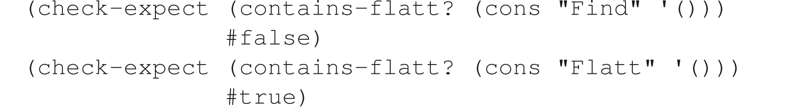
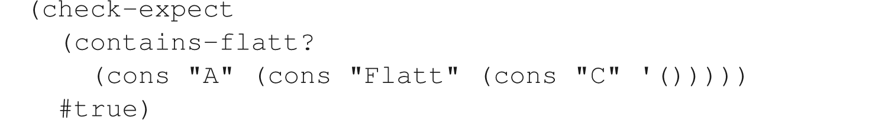
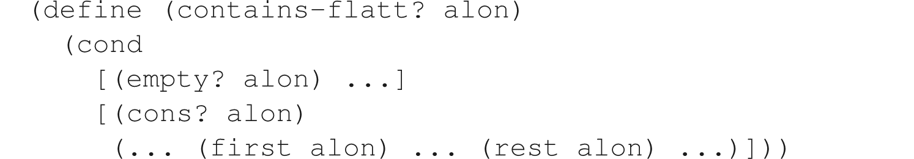
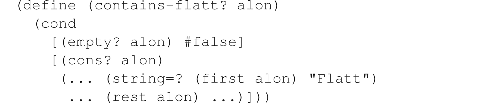
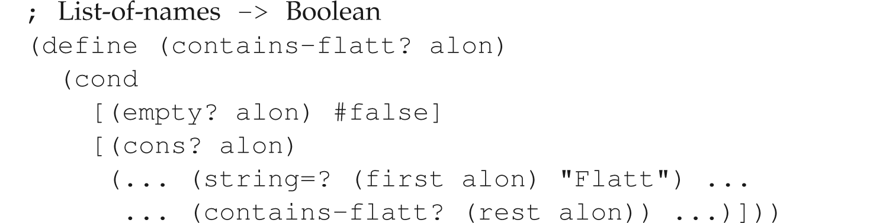
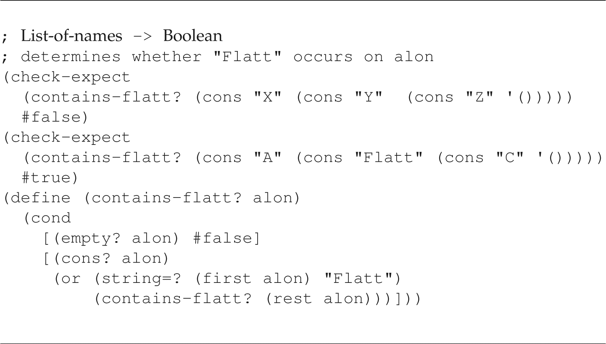
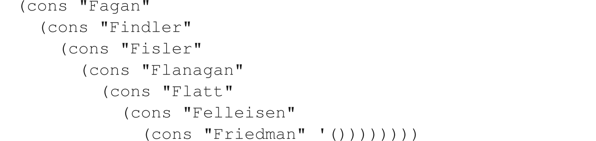

8.3 Programming with Lists
Say you’re keeping track of your friends with some list, and say the list has grown so large that you need a program to determine whether some name is on the list. To make this idea concrete, let’s state it as an exercise:
Here we use the word “friend” in the sense of social networks, not the real world.
Sample Problem You are working on the contact list for some new cell phone. The phone’s owner updates and consults this list on various occasions. For now, you are assigned the task of designing a function that consumes this list of contacts and determines whether it contains the name “Flatt.”
Once we have a solution to this sample problem, we will generalize it to a function that finds any name on a list.
The data definition for List-of-names from the preceding is appropriate for representing the list of names that the function is to search. Next we turn to the header material:
; List-of-names -> Boolean
; determines whether "Flatt" is on a-list-of-names
(define (contains-flatt? a-list-of-names)
#false)
While a-list-of-names is a good name for the list of names that the function consumes, it is a mouthful and we therefore shorten it to alon.
Following the general design recipe, we next make up some examples that illustrate the purpose of the function. First, we determine the output for the simplest input: '(). Since this list does not contain any strings, it certainly does not contain "Flatt":
(check-expect (contains-flatt? '()) #false)
Then we consider lists with a single item. Here are two examples:

In the first case, the answer is #false because the single item on the list is not "Flatt"; in the second case, the single item is "Flatt", so the answer is #true. Finally, here is a more general example:

Again, the answer case must be #true because the list contains "Flatt". Stop! Make a general example for which the answer must be #false.
Take a breath. Run the program. The header is a “dummy” definition for the function; you have some examples; they have been turned into tests; and best of all, some of them actually succeed. They succeed for the wrong reason but succeed they do. If things make sense now, read on.
The fourth step is to design a function template that matches the data definition. Since the data definition for lists of strings has two clauses, the function’s body must be a cond expression with two clauses. The two conditions determine which of the two kinds of lists the function received:
(define (contains-flatt? alon)
(cond
[(empty? alon) …]
[(cons? alon) …]))
Instead of (cons? alon), we could use else in the second clause.
We can add one more hint to the template by studying each clause of the cond expression in turn. Specifically, recall that the design recipe suggests annotating each clause with selector expressions if the corresponding class of inputs consists of compounds. In our case, we know that '() does not have compounds, so there are no components. Otherwise the list is constructed from a string and another list of strings, and we remind ourselves of this fact by adding (first alon) and (rest alon) to the template:

Now it is time to switch to the programming task proper, the fifth step of our design recipe. It starts from a template and deals with each cond clause separately. If (empty? alon) is true, the input is the empty list, in which case the function must produce the result #false. In the second case, (cons? alon) is true. The annotations in the template remind us that there is a first string and then the rest of the list. So let’s consider an example that falls into this category:
(cons "A"
(cons …
… '()))
The function, like a person, must compare the first item with "Flatt". In this example, the first one is "A" and not "Flatt", so the comparison yields #false. If we had considered some other example instead, say,
(cons "Flatt"
(cons …
… '()))
the function would determine that the first item on the input is "Flatt", and would therefore respond with #true. This implies that the second line in the cond expression should contain an expression that compares the first name on the list with "Flatt":

Furthermore, if the comparison yields #true, the function must produce #true. If the comparison yields #false, we are left with another list of strings: (rest alon). Clearly, the function can’t know the final answer in this case, because the answer depends on what “⋯” represents. Put differently, if the first item is not "Flatt", we need some way to check whether the rest of the list contains "Flatt".
Fortunately, we have contains-flatt? and it fits the bill. According to its purpose statement, it determines whether a list contains "Flatt". The statement implies that (contains-flatt? l) tells us whether the list of strings l contains "Flatt". And, in the same vein, (contains-flatt? (rest alon)) determines whether "Flatt" is a member of (rest alon), which is precisely what we need to know.
In short, the last line should be (contains-flatt? (rest alon)):

The trick is now to combine the values of the two expressions in the appropriate manner. As mentioned, if the first expression yields #true, there is no need to search the rest of the list; if it is #false, though, the second expression may still yield #true, meaning the name "Flatt" is on the rest of the list. All of this suggests that the result of (contains-flatt? alon) is #true if either the first expression in the last line or the second expression yields #true.
Figure 47 then shows the complete definition. Overall it doesn’t look too different from the definitions in the first chapter of the book. It consists of a signature, a purpose statement, two examples, and a definition. The only way in which this function definition differs from anything you have seen before is the self-reference, that is, the reference to contains-flatt? in the body of the define. Then again, the data definition is self-referential, too, so in some sense the self-reference in the function shouldn’t be too surprising.

Figure 47: Searching a list
Exercise 132. Use DrRacket to run contains-flatt? in this example:

What answer do you expect? 
Exercise 133. Here is another way of formulating the second cond clause in contains-flatt?:
Explain why this expression produces the same answers as the or expression in the version of figure 47. Which version is better? Explain.
Exercise 134. Develop the contains? function, which determines whether some given string occurs on a given list of strings.
Note BSL actually comes with member?, a function that consumes two values and checks whether the first occurs in the second, a list:
> (member? "Flatt" (cons "b" (cons "Flatt" '())))
#true
Don’t use member? to define the contains? function.